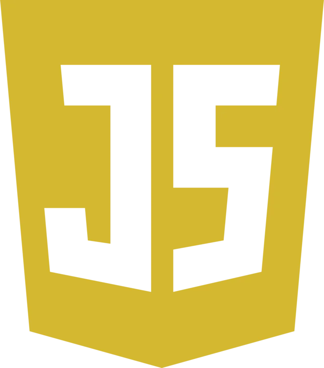
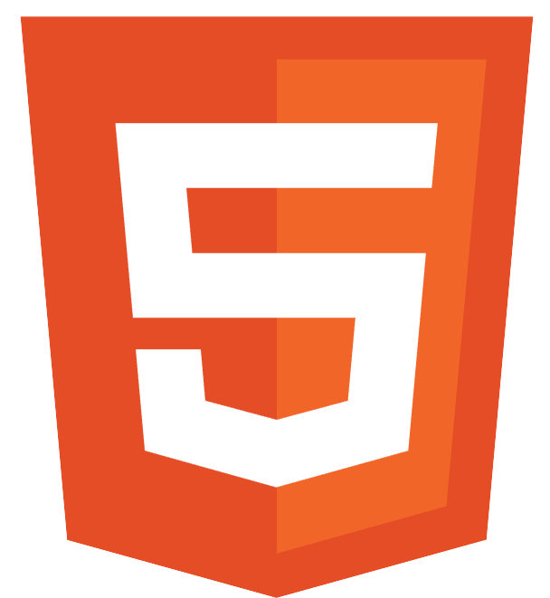
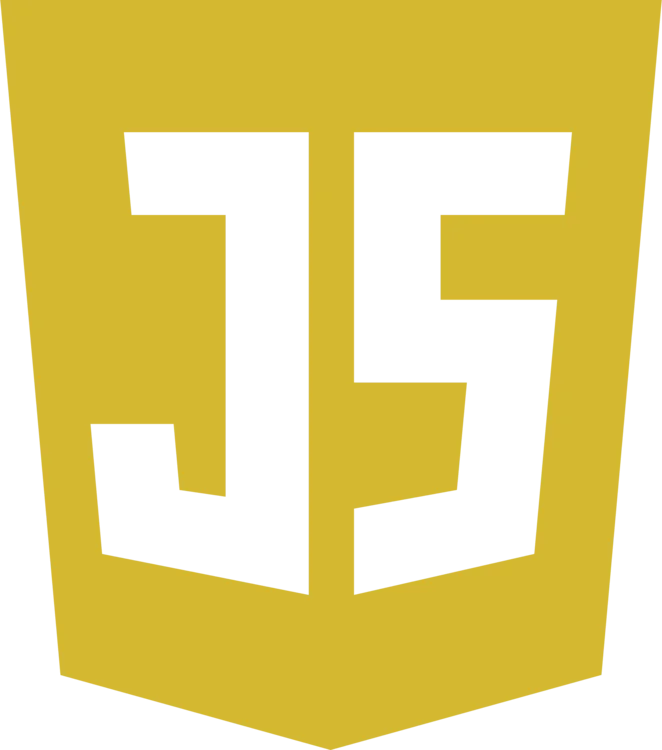
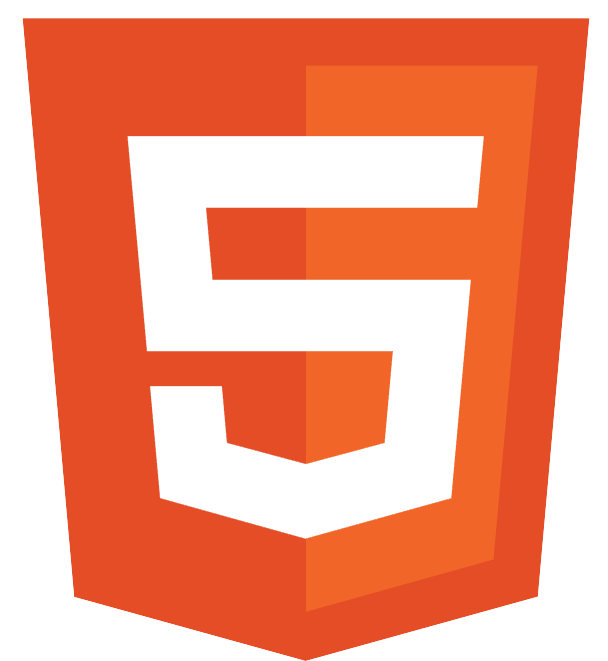
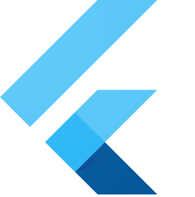
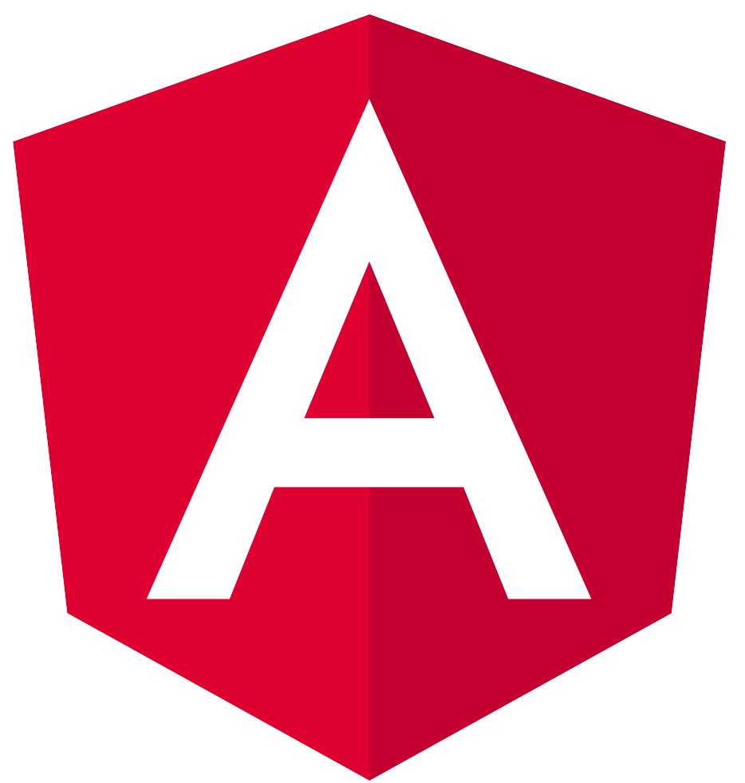
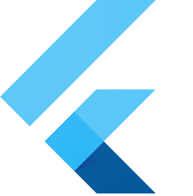
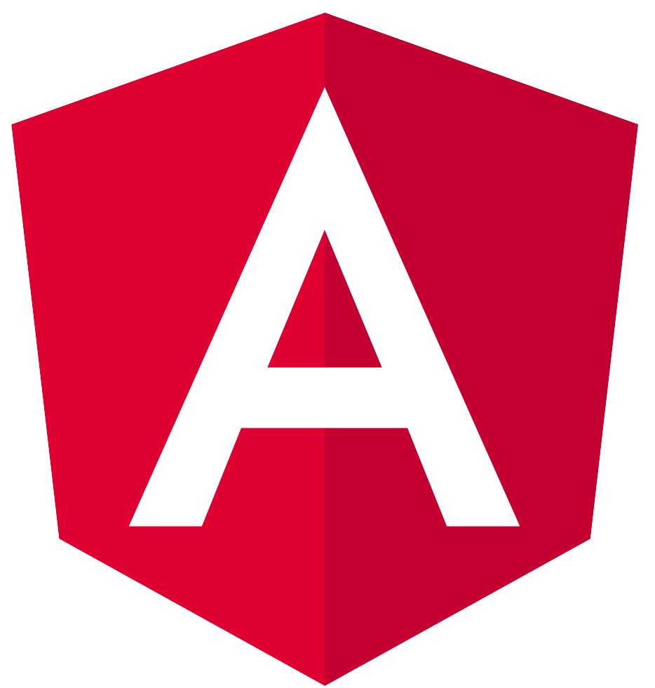

hi, my name is zoe.
I am a software engineering student dedicated to creating efficient solutions with intuitive user experiences. My coding experience ranges from web development to robotics, allowing me to build valuable skills surrounding both functionality and usability.
my projects
Project W.A.R.D.E.N.

Wireless Assessment Rover with Drone Extended Network: a 6-week long project completed during my internship at NJII COMET. Reconnaissance system built for a dense jungle environment with obstructed signal. Led the software team to create control and communication code. Implemented LAN network communication, using the drone as a range extender for the ground vehicle. Used an NVIDIA Jetson Orin Nano to implement object detection using DetectNet and PlantNet-300K.
PythonC++Raspberry PiOpenCV

Wikipedia Race
Finds the shortest path from one wikipedia article to another using hyperlinks. Uses A* Search with a title overlap heuristic and multi-threading to optimize search time. Outputs a visualized graph with the closest 300 nodes along with search time, number of articles searched, and the final path.
PythonNetworkXMatplotlib
U-Fund Donations Board
A non-profit donations board where users can select specific needs to add to their cart and checkout. Includes user authentication, different types of users, and account creation, edit, and deletion. Implemented a leaderboard to rank users based on their donations.
JavaAngularRESTSpringSonarQubeOpenUPScrum

VEX Scoring Calculator
A web-based scoring calculator for the VEX Robotics challenge High Stakes. Built as a more user friendly and scoring accurate alternative to the official V5RC Hub app calculator.
JavaScriptHTMLCSSGitHub Pages


my skills
programming languages
 




technologies and frameworks
 




my experience
-
New Jersey Innovative Institute COMET
Software Engineer Intern June 2024-presentSoftware lead for project W.A.R.D.E.N. Created control code for ground vehicle Raspberry Pi. Facilitated sub-team communication and implemented a Gantt chart to ensure deadlines were met. Continued work after the 6 weeks were over to implement object detection using OpenCV on an NVIDIA Jetson Nano.
Enhanced existing Flutter Android app by working closely with client. Created a robust python script to automate administrative tasks and generate app activation codes specific to each user using RSA encryption. -
RIT VEX U Robotics
Social Media & Recruitment Manager April 2024-presentIncreased new member retention by over 300%. Assisted with general administrative tasks such as team management and event planning.
Event Manager Jan 2023-April 2024Managed logistics for three informational events and two robotics competitions. Coordinated a team of 12 volunteers to run and manage events of 200+ participants.
Hardware Member Aug 2022-April 2024Acted as a bridge between hardware and software. Facilitated sub-team communication through Slack and GitHub Projects. Led competition debriefs and full-team planning meetings.
-
Pope John High School FIRST Tech Challenge Robotics
Mentor June 2022-presentTeach 7th-12th grade students technical and soft skills needed for robotics. Mentor students on good programming practices (Java), design process, and technical documentation. Guide students on team management, coordination, and communication.